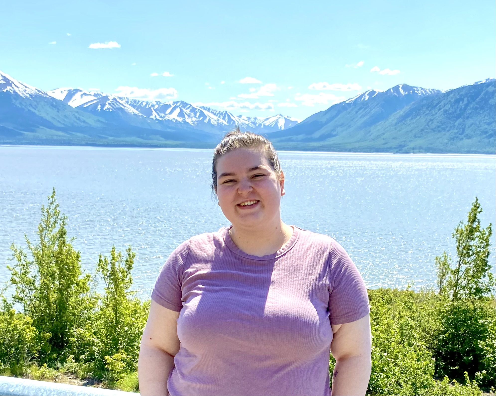
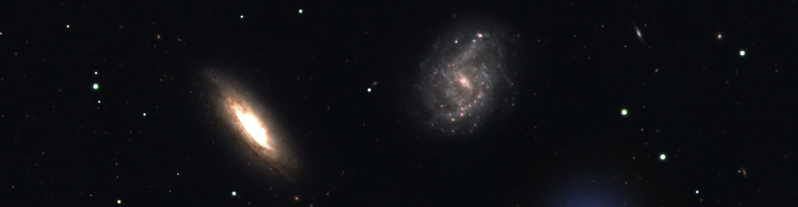
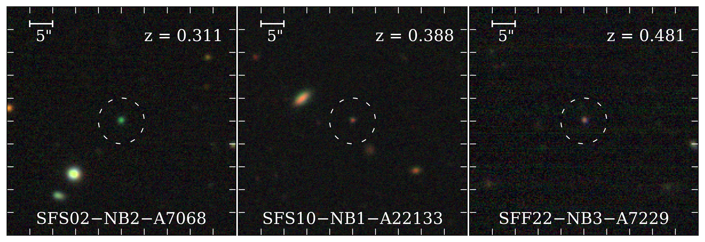
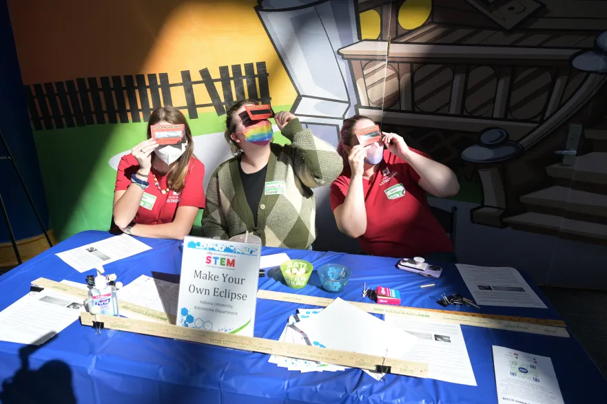
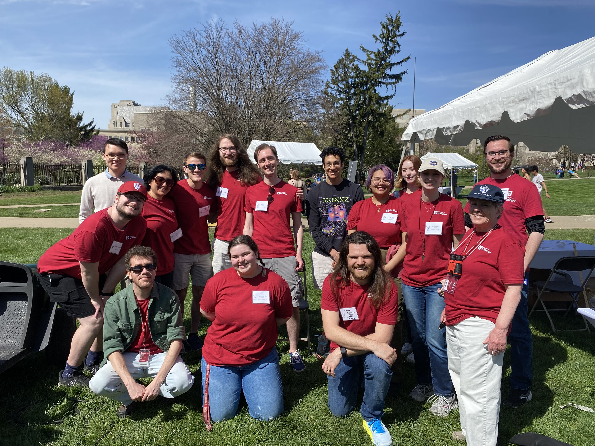
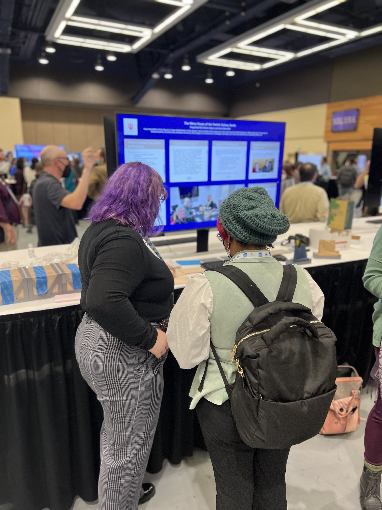

About Me

Hi there! I'm an Astronomy Ph.D. candidate at
Indiana University - Bloomington (IU). My broad interest
lies in the study of extreme galaxies and how they evolve.
My dissertation, under the advisorship of Dr. John Salzer,
centers using the Star Formation Across Cosmic Time (SFACT)
Survey to find and to study Green Pea galaxies, known to be
a class of extreme star-forming galaxies.
Research

Star Formation Acorss Cosmic Time (SFACT) Survey
The Star Formation Across Cosmic Time (SFACT) survey is a
narrowband (NB) imaging survey searching galaxies in the universe with.
SFACT utilizes three custom NB filters to find optical line emission in
galaxies that is produced via star formation or the accretion of material
onto a central supermassive blackhole. SFACT detects these so-called
emission-line galaxies (ELGs) when one or more emission lines produced
by the ELGs is redshifted into one of our filters and causes excess emission.
SFACT detects ELGs in discrete redshift intervals out to z ~ 1. SFACT
achieves a median depth of r ~ 22.5 with the faintest detections reaching
r ~ 25.8. In addition to NB and ODI gri imaging, all SFACT ELG candidates
have spectroscopic follow-up using the Hydra mutli-fiber positioner on the
WIYN 3.5m. I have been an active collaborator on the SFACT survey since
Spring 2022 where my role includes participating in the data collection,
processing imaging data, and developing new analysis codes for the SFACT
data processing pipeline.
Find the SFACT Survey Papers: Salzer et al. 2023,
Sieben et al. 2023,
Carr et al. 2023,
Green Pea Galaxies
Green Pea galaxies (GPs) are among the most extreme star-forming
galaxies known. With their extreme properties, including compact geometries, low metal abundances,
and extreme star formation rates, GPs are thought to resemble galaxies present when the universe was
less than a billion years old (z > 6). Previous samples of GPs have been limited to lookback times of
2-4 Gyrs (z = 0.11 - 0.35). My dissertation centers on assembling a new, statistically complete catalog
of GPs found within SFACT that covers z = 0.31 - 0.51. We are using this sample to study the properties
of GPs in z = 0.31 - 0.51 and to answer questions about the redshift evolution of this class of galaxies.

Outreach

Summary
(add a statement about loving outreach being involved)
PyIU: A Workshop Series on Python Essentials
Since Fall of 2022, I have been
heavily involved in PyIU, a Python crash course program developed and led by astronomy
graduate students. PyIU was founded with the intention of equiping astronomy undergraduate
students with coding skills essential for scientific research. As a member of the organizing
committee for PyIU, I have helped coordinate events and write new code + teaching materials.
Since 2022, PyIU has expanded to high school students from rural communities in South-Central
Indiana with the support of NASA's Indiana Space Grant program (FY2026: PIs: Brandon Radzom,
Samir Salim, Co-Is: Kristin Baker (Me!), Lexi Gault, Robert Howard, Sarah Popp, Jessica Ranshaw).
See the PyIU poster here!
Eclipse Coordinator
In April 2024, Bloomington IN was in the path of totality for
the total solar eclipse! For the 2023-2024 academic year, I acted as the IU Department of
Astronomy Eclipse Coordinator (EC). In my role as EC, I coordinated our departments public outreach
and education events, gave public talks, guest lectured for gen-ed level astronomy classes,
and so much more!

Galaxy Dominoes: A Tactile Tool for Teaching Astronomy
As an undergraduate student,
I interned at Geneva Lake Astrophysics and STEAM (GLAS) Education, a non-profit organization out
of Williams Bay WI. There I developed a 3D-printed tactile card gam designed to teach blind and
low-vision students about galaxy properties.
Learn more here!
Teaching
